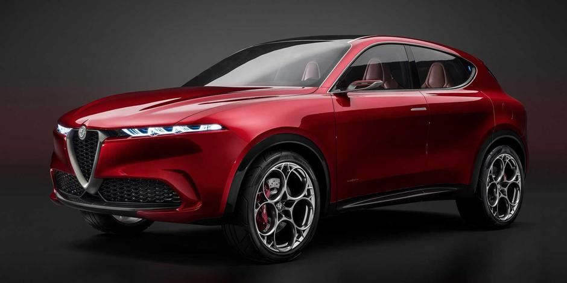

Automobili
Automobili su postali neizostavan dio našeg modernog načina života. Omogućuju nam brzo
i jednostavno putovanje na dugačke udaljenosti, što nam olakšava posao, obrazovanje, putovanja
i druge aktivnosti. Međutim, uz to dolaze i neki važni faktori koje je potrebno uzeti u obzir.
Prvo, automobili značajno doprinose emisiji štetnih plinova koji utječu na kvalitetu zraka i okoliša,
što može imati ozbiljne posljedice po zdravlje ljudi i životinjskih vrsta. Stoga je važno razmotriti
upotrebu alternativnih izvora goriva kao što su električna vozila ili hibridni automobili koji emitiraju
manje zagađujuće tvari.
Drugo, vožnja automobila može biti opasna po život, kako za vozača tako i za putnike i druge sudionike
u prometu. Potrebno je poštivati prometna pravila i upute, voziti oprezno i uvijek biti na oprezu.
Također, automobili su skupi i zahtijevaju redovno održavanje kako bi bili sigurni za vožnju i produžili
vijek trajanja. Potrebno je pažljivo razmotriti financijski aspekt pri kupnji automobila, uključujući troškove
osiguranja, registracije i održavanja.

Zaključak, automobili su vrlo korisni u današnjem svijetu, ali i imaju negativan utjecaj na okoliš i
zahtijevaju opreznu i odgovornu vožnju kako bi se smanjio rizik od nesreća. Stoga, važno je pažljivo
razmotriti prijevozne opcije i odluke o kupnji automobila kako bi se postigla ravnoteža između praktičnosti
i održivosti.